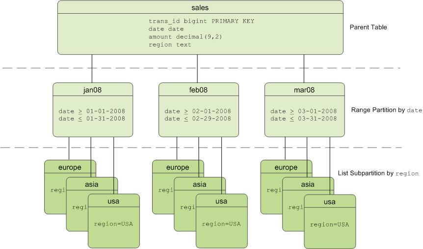

Partitioning Large Tables
Table partitioning enables supporting very large tables, such as fact tables, by logically dividing them into smaller, more manageable pieces. Partitioned tables can improve query performance by allowing the SynxDB query optimizer to scan only the data needed to satisfy a given query instead of scanning all the contents of a large table.
- About Table Partitioning
- Deciding on a Table Partitioning Strategy
- Creating Partitioned Tables
- Loading Partitioned Tables
- Verifying Your Partition Strategy
- Viewing Your Partition Design
- Maintaining Partitioned Tables
About Table Partitioning
Partitioning does not change the physical distribution of table data across the segments. Table distribution is physical: SynxDB physically divides partitioned tables and non-partitioned tables across segments to enable parallel query processing. Table partitioning is logical: SynxDB logically divides big tables to improve query performance and facilitate data warehouse maintenance tasks, such as rolling old data out of the data warehouse.
SynxDB supports:
- range partitioning: division of data based on a numerical range, such as date or price.
- list partitioning: division of data based on a list of values, such as sales territory or product line.
- A combination of both types.

Table Partitioning in SynxDB
SynxDB divides tables into parts (also known as partitions) to enable massively parallel processing. Tables are partitioned during CREATE TABLE using the PARTITION BY (and optionally the SUBPARTITION BY) clause. Partitioning creates a top-level (or parent) table with one or more levels of sub-tables (or child tables). Internally, SynxDB creates an inheritance relationship between the top-level table and its underlying partitions, similar to the functionality of the INHERITS clause of PostgreSQL.
SynxDB uses the partition criteria defined during table creation to create each partition with a distinct CHECK constraint, which limits the data that table can contain. The query optimizer uses CHECK constraints to determine which table partitions to scan to satisfy a given query predicate.
The SynxDB system catalog stores partition hierarchy information so that rows inserted into the top-level parent table propagate correctly to the child table partitions. To change the partition design or table structure, alter the parent table using ALTER TABLE with the PARTITION clause.
To insert data into a partitioned table, you specify the root partitioned table, the table created with the CREATE TABLE command. You also can specify a leaf child table of the partitioned table in an INSERT command. An error is returned if the data is not valid for the specified leaf child table. Specifying a non-leaf or a non-root partition table in the DML command is not supported.
Deciding on a Table Partitioning Strategy
SynxDB does not support partitioning replicated tables (DISTRIBUTED REPLICATED). Not all hash-distributed or randomly distributed tables are good candidates for partitioning. If the answer is yes to all or most of the following questions, table partitioning is a viable database design strategy for improving query performance. If the answer is no to most of the following questions, table partitioning is not the right solution for that table. Test your design strategy to ensure that query performance improves as expected.
- Is the table large enough? Large fact tables are good candidates for table partitioning. If you have millions or billions of records in a table, you may see performance benefits from logically breaking that data up into smaller chunks. For smaller tables with only a few thousand rows or less, the administrative overhead of maintaining the partitions will outweigh any performance benefits you might see.
- Are you experiencing unsatisfactory performance? As with any performance tuning initiative, a table should be partitioned only if queries against that table are producing slower response times than desired.
- Do your query predicates have identifiable access patterns? Examine the
WHEREclauses of your query workload and look for table columns that are consistently used to access data. For example, if most of your queries tend to look up records by date, then a monthly or weekly date-partitioning design might be beneficial. Or if you tend to access records by region, consider a list-partitioning design to divide the table by region. - Does your data warehouse maintain a window of historical data? Another consideration for partition design is your organization’s business requirements for maintaining historical data. For example, your data warehouse may require that you keep data for the past twelve months. If the data is partitioned by month, you can easily drop the oldest monthly partition from the warehouse and load current data into the most recent monthly partition.
- Can the data be divided into somewhat equal parts based on some defining criteria? Choose partitioning criteria that will divide your data as evenly as possible. If the partitions contain a relatively equal number of records, query performance improves based on the number of partitions created. For example, by dividing a large table into 10 partitions, a query will run 10 times faster than it would against the unpartitioned table, provided that the partitions are designed to support the query’s criteria.
Do not create more partitions than are needed. Creating too many partitions can slow down management and maintenance jobs, such as vacuuming, recovering segments, expanding the cluster, checking disk usage, and others.
Partitioning does not improve query performance unless the query optimizer can eliminate partitions based on the query predicates. Queries that scan every partition run slower than if the table were not partitioned, so avoid partitioning if few of your queries achieve partition elimination. Check the explain plan for queries to make sure that partitions are eliminated. See Query Profiling for more about partition elimination.
Caution Be very careful with multi-level partitioning because the number of partition files can grow very quickly. For example, if a table is partitioned by both day and city, and there are 1,000 days of data and 1,000 cities, the total number of partitions is one million. Column-oriented tables store each column in a physical table, so if this table has 100 columns, the system would be required to manage 100 million files for the table, for each segment.
Before settling on a multi-level partitioning strategy, consider a single level partition with bitmap indexes. Indexes slow down data loads, so performance testing with your data and schema is recommended to decide on the best strategy.
Creating Partitioned Tables
You partition tables when you create them with CREATE TABLE. This topic provides examples of SQL syntax for creating a table with various partition designs.
To partition a table:
- Decide on the partition design: date range, numeric range, or list of values.
- Choose the column(s) on which to partition the table.
- Decide how many levels of partitions you want. For example, you can create a date range partition table by month and then subpartition the monthly partitions by sales region.
- Defining Date Range Table Partitions
- Defining Numeric Range Table Partitions
- Defining List Table Partitions
- Defining Multi-level Partitions
- Partitioning an Existing Table
Defining Date Range Table Partitions
A date range partitioned table uses a single date or timestamp column as the partition key column. You can use the same partition key column to create subpartitions if necessary, for example, to partition by month and then subpartition by day. Consider partitioning by the most granular level. For example, for a table partitioned by date, you can partition by day and have 365 daily partitions, rather than partition by year then subpartition by month then subpartition by day. A multi-level design can reduce query planning time, but a flat partition design runs faster.
You can have SynxDB automatically generate partitions by giving a START value, an END value, and an EVERY clause that defines the partition increment value. By default, START values are always inclusive and END values are always exclusive. For example:
CREATE TABLE sales (id int, date date, amt decimal(10,2))
DISTRIBUTED BY (id)
PARTITION BY RANGE (date)
( START (date '2016-01-01') INCLUSIVE
END (date '2017-01-01') EXCLUSIVE
EVERY (INTERVAL '1 day') );
You can also declare and name each partition individually. For example:
CREATE TABLE sales (id int, date date, amt decimal(10,2))
DISTRIBUTED BY (id)
PARTITION BY RANGE (date)
( PARTITION Jan16 START (date '2016-01-01') INCLUSIVE ,
PARTITION Feb16 START (date '2016-02-01') INCLUSIVE ,
PARTITION Mar16 START (date '2016-03-01') INCLUSIVE ,
PARTITION Apr16 START (date '2016-04-01') INCLUSIVE ,
PARTITION May16 START (date '2016-05-01') INCLUSIVE ,
PARTITION Jun16 START (date '2016-06-01') INCLUSIVE ,
PARTITION Jul16 START (date '2016-07-01') INCLUSIVE ,
PARTITION Aug16 START (date '2016-08-01') INCLUSIVE ,
PARTITION Sep16 START (date '2016-09-01') INCLUSIVE ,
PARTITION Oct16 START (date '2016-10-01') INCLUSIVE ,
PARTITION Nov16 START (date '2016-11-01') INCLUSIVE ,
PARTITION Dec16 START (date '2016-12-01') INCLUSIVE
END (date '2017-01-01') EXCLUSIVE );
You do not have to declare an END value for each partition, only the last one. In this example, Jan16 ends where Feb16 starts.
Defining Numeric Range Table Partitions
A numeric range partitioned table uses a single numeric data type column as the partition key column. For example:
CREATE TABLE rank (id int, rank int, year int, gender
char(1), count int)
DISTRIBUTED BY (id)
PARTITION BY RANGE (year)
( START (2006) END (2016) EVERY (1),
DEFAULT PARTITION extra );
For more information about default partitions, see Adding a Default Partition.
Defining List Table Partitions
A list partitioned table can use any data type column that allows equality comparisons as its partition key column. A list partition can also have a multi-column (composite) partition key, whereas a range partition only allows a single column as the partition key. For list partitions, you must declare a partition specification for every partition (list value) you want to create. For example:
CREATE TABLE rank (id int, rank int, year int, gender
char(1), count int )
DISTRIBUTED BY (id)
PARTITION BY LIST (gender)
( PARTITION girls VALUES ('F'),
PARTITION boys VALUES ('M'),
DEFAULT PARTITION other );
Note The current Postgres Planner allows list partitions with multi-column (composite) partition keys. A range partition only allows a single column as the partition key. GPORCA does not support composite keys, so you should not use composite partition keys.
For more information about default partitions, see Adding a Default Partition.
Defining Multi-level Partitions
You can create a multi-level partition design with subpartitions of partitions. Using a subpartition template ensures that every partition has the same subpartition design, including partitions that you add later. For example, the following SQL creates a two-level partition design:
CREATE TABLE sales (trans_id int, date date, amount
decimal(9,2), region text)
DISTRIBUTED BY (trans_id)
PARTITION BY RANGE (date)
SUBPARTITION BY LIST (region)
SUBPARTITION TEMPLATE
( SUBPARTITION usa VALUES ('usa'),
SUBPARTITION asia VALUES ('asia'),
SUBPARTITION europe VALUES ('europe'),
DEFAULT SUBPARTITION other_regions)
(START (date '2011-01-01') INCLUSIVE
END (date '2012-01-01') EXCLUSIVE
EVERY (INTERVAL '1 month'),
DEFAULT PARTITION outlying_dates );
The following example shows a three-level partition design where the sales table is partitioned by year, then month, then region. The SUBPARTITION TEMPLATE clauses ensure that each yearly partition has the same subpartition structure. The example declares a DEFAULT partition at each level of the hierarchy.
CREATE TABLE p3_sales (id int, year int, month int, day int,
region text)
DISTRIBUTED BY (id)
PARTITION BY RANGE (year)
SUBPARTITION BY RANGE (month)
SUBPARTITION TEMPLATE (
START (1) END (13) EVERY (1),
DEFAULT SUBPARTITION other_months )
SUBPARTITION BY LIST (region)
SUBPARTITION TEMPLATE (
SUBPARTITION usa VALUES ('usa'),
SUBPARTITION europe VALUES ('europe'),
SUBPARTITION asia VALUES ('asia'),
DEFAULT SUBPARTITION other_regions )
( START (2002) END (2012) EVERY (1),
DEFAULT PARTITION outlying_years );
Caution When you create multi-level partitions on ranges, it is easy to create a large number of subpartitions, some containing little or no data. This can add many entries to the system tables, which increases the time and memory required to optimize and run queries. Increase the range interval or choose a different partitioning strategy to reduce the number of subpartitions created.
Partitioning an Existing Table
Tables can be partitioned only at creation. If you have a table that you want to partition, you must create a partitioned table, load the data from the original table into the new table, drop the original table, and rename the partitioned table with the original table’s name. You must also re-grant any table permissions. For example:
CREATE TABLE sales2 (LIKE sales)
PARTITION BY RANGE (date)
( START (date 2016-01-01') INCLUSIVE
END (date '2017-01-01') EXCLUSIVE
EVERY (INTERVAL '1 month') );
INSERT INTO sales2 SELECT * FROM sales;
DROP TABLE sales;
ALTER TABLE sales2 RENAME TO sales;
GRANT ALL PRIVILEGES ON sales TO admin;
GRANT SELECT ON sales TO guest;
Note The
LIKEclause does not copy over partition structures when creating a new table.
Limitations of Partitioned Tables
For each partition level, a partitioned table can have a maximum of 32,767 partitions.
A primary key or unique constraint on a partitioned table must contain all the partitioning columns. A unique index can omit the partitioning columns; however, it is enforced only on the parts of the partitioned table, not on the partitioned table as a whole.
Tables created with the DISTRIBUTED REPLICATED distribution policy cannot be partitioned.
GPORCA, the SynxDB next generation query optimizer, supports uniform multi-level partitioned tables. If GPORCA is enabled (the default) and the multi-level partitioned table is not uniform, SynxDB runs queries against the table with the Postgres Planner. For information about uniform multi-level partitioned tables, see About Uniform Multi-level Partitioned Tables.
For information about exchanging a leaf child partition with an external table, see Exchanging a Leaf Child Partition with an External Table.
These are limitations for partitioned tables when a leaf child partition of the table is an external table:
-
Queries that run against partitioned tables that contain external table partitions are run with the Postgres Planner.
-
The external table partition is a read only external table. Commands that attempt to access or modify data in the external table partition return an error. For example:
-
INSERT,DELETE, andUPDATEcommands that attempt to change data in the external table partition return an error. -
TRUNCATEcommands return an error. -
COPYcommands cannot copy data to a partitioned table that updates an external table partition. -
COPYcommands that attempt to copy from an external table partition return an error unless you specify theIGNORE EXTERNAL PARTITIONSclause withCOPYcommand. If you specify the clause, data is not copied from external table partitions.To use the
COPYcommand against a partitioned table with a leaf child table that is an external table, use an SQL query to copy the data. For example, if the tablemy_salescontains a with a leaf child table that is an external table, this command sends the data tostdout:COPY (SELECT * from my_sales ) TO stdout -
VACUUMcommands skip external table partitions.
-
-
The following operations are supported if no data is changed on the external table partition. Otherwise, an error is returned.
- Adding or dropping a column.
- Changing the data type of column.
-
These
ALTER PARTITIONoperations are not supported if the partitioned table contains an external table partition:- Setting a subpartition template.
- Altering the partition properties.
- Creating a default partition.
- Setting a distribution policy.
- Setting or dropping a
NOT NULLconstraint of column. - Adding or dropping constraints.
- Splitting an external partition.
-
The SynxDB
gpbackuputility does not back up data from a leaf child partition of a partitioned table if the leaf child partition is a readable external table.
Loading Partitioned Tables
After you create the partitioned table structure, top-level parent tables are empty. Data is routed to the bottom-level child table partitions. In a multi-level partition design, only the subpartitions at the bottom of the hierarchy can contain data.
Rows that cannot be mapped to a child table partition are rejected and the load fails. To avoid unmapped rows being rejected at load time, define your partition hierarchy with a DEFAULT partition. Any rows that do not match a partition’s CHECK constraints load into the DEFAULT partition. See Adding a Default Partition.
At runtime, the query optimizer scans the entire table inheritance hierarchy and uses the CHECK table constraints to determine which of the child table partitions to scan to satisfy the query’s conditions. The DEFAULT partition (if your hierarchy has one) is always scanned. DEFAULT partitions that contain data slow down the overall scan time.
When you use COPY or INSERT to load data into a parent table, the data is automatically rerouted to the correct partition, just like a regular table.
Best practice for loading data into partitioned tables is to create an intermediate staging table, load it, and then exchange it into your partition design. See Exchanging a Partition.
Verifying Your Partition Strategy
When a table is partitioned based on the query predicate, you can use EXPLAIN to verify that the query optimizer scans only the relevant data to examine the query plan.
For example, suppose a sales table is date-range partitioned by month and subpartitioned by region.
EXPLAIN SELECT * FROM sales WHERE date='01-07-12' AND
region='usa';
The query plan for this query should show a table scan of only the following tables:
- the default partition returning 0-1 rows (if your partition design has one)
- the January 2012 partition (sales_1_prt_1) returning 0-1 rows
- the USA region subpartition (sales_1_2_prt_usa) returning some number of rows.
The following example shows the relevant portion of the query plan.
-> `Seq Scan on``sales_1_prt_1` sales (cost=0.00..0.00 `rows=0`
width=0)
Filter: "date"=01-07-12::date AND region='USA'::text
-> `Seq Scan on``sales_1_2_prt_usa` sales (cost=0.00..9.87
`rows=20`
width=40)
Ensure that the query optimizer does not scan unnecessary partitions or subpartitions (for example, scans of months or regions not specified in the query predicate), and that scans of the top-level tables return 0-1 rows.
Troubleshooting Selective Partition Scanning
The following limitations can result in a query plan that shows a non-selective scan of your partition hierarchy.
-
The query optimizer can selectively scan partitioned tables only when the query contains a direct and simple restriction of the table using immutable operators such as:
=, < , <= , >, >= , and <>
-
Selective scanning recognizes
STABLEandIMMUTABLEfunctions, but does not recognizeVOLATILEfunctions within a query. For example,WHEREclauses such asdate > CURRENT_DATEcause the query optimizer to selectively scan partitioned tables, buttime > TIMEOFDAYdoes not.
Viewing Your Partition Design
You can look up information about your partition design using the pg_partitions system view. For example, to see the partition design of the sales table:
SELECT partitionboundary, partitiontablename, partitionname,
partitionlevel, partitionrank
FROM pg_partitions
WHERE tablename='sales';
The following table and views also show information about partitioned tables.
- pg_partition- Tracks partitioned tables and their inheritance level relationships.
- pg_partition_templates- Shows the subpartitions created using a subpartition template.
- pg_partition_columns - Shows the partition key columns used in a partition design.
Maintaining Partitioned Tables
To maintain a partitioned table, use the ALTER TABLE command against the top-level parent table. The most common scenario is to drop old partitions and add new ones to maintain a rolling window of data in a range partition design. You can convert (exchange) older partitions to the append-optimized compressed storage format to save space. If you have a default partition in your partition design, you add a partition by splitting the default partition.
- Adding a Partition
- Renaming a Partition
- Adding a Default Partition
- Dropping a Partition
- Truncating a Partition
- Exchanging a Partition
- Splitting a Partition
- Modifying a Subpartition Template
- Exchanging a Leaf Child Partition with an External Table
Important When defining and altering partition designs, use the given partition name, not the table object name. The given partition name is the
partitionnamecolumn value in the pg_partitions system view. Although you can query and load any table (including partitioned tables) directly using SQL commands, you can only modify the structure of a partitioned table using theALTER TABLE...PARTITIONclauses.
Partitions are not required to have names. If a partition does not have a name, use one of the following expressions to specify a partition: PARTITION FOR (value) or PARTITION FOR (RANK(number)).
For a multi-level partitioned table, you identify a specific partition to change with ALTER PARTITION clauses. For each partition level in the table hierarchy that is above the target partition, specify the partition that is related to the target partition in an ALTER PARTITION clause. For example, if you have a partitioned table that consists of three levels, year, quarter, and region, this ALTER TABLE command exchanges a leaf partition region with the table region_new.
ALTER TABLE sales ALTER PARTITION year_1 ALTER PARTITION quarter_4 EXCHANGE PARTITION region WITH TABLE region_new ;
The two ALTER PARTITION clauses identify which region partition to exchange. Both clauses are required to identify the specific leaf partition to exchange.
Adding a Partition
You can add a partition to a partition design with the ALTER TABLE command. If the original partition design included subpartitions defined by a subpartition template, the newly added partition is subpartitioned according to that template. For example:
ALTER TABLE sales ADD PARTITION
START (date '2017-02-01') INCLUSIVE
END (date '2017-03-01') EXCLUSIVE;
If you did not use a subpartition template when you created the table, you define subpartitions when adding a partition:
ALTER TABLE sales ADD PARTITION
START (date '2017-02-01') INCLUSIVE
END (date '2017-03-01') EXCLUSIVE
( SUBPARTITION usa VALUES ('usa'),
SUBPARTITION asia VALUES ('asia'),
SUBPARTITION europe VALUES ('europe') );
When you add a subpartition to an existing partition, you can specify the partition to alter. For example:
ALTER TABLE sales ALTER PARTITION FOR (RANK(12))
ADD PARTITION africa VALUES ('africa');
Note You cannot add a partition to a partition design that has a default partition. You must split the default partition to add a partition. See Splitting a Partition.
Renaming a Partition
Partitioned tables use the following naming convention. Partitioned subtable names are subject to uniqueness requirements and length limitations.
<parentname>_<level>_prt_<partition_name>
For example:
sales_1_prt_jan16
For auto-generated range partitions, where a number is assigned when no name is given):
sales_1_prt_1
To rename a partitioned child table, rename the top-level parent table. The <parentname> changes in the table names of all associated child table partitions. For example, the following command:
ALTER TABLE sales RENAME TO globalsales;
Changes the associated table names:
globalsales_1_prt_1
You can change the name of a partition to make it easier to identify. For example:
ALTER TABLE sales RENAME PARTITION FOR ('2016-01-01') TO jan16;
Changes the associated table name as follows:
sales_1_prt_jan16
When altering partitioned tables with the ALTER TABLE command, always refer to the tables by their partition name (jan16) and not their full table name (sales_1_prt_jan16).
Note The table name cannot be a partition name in an
ALTER TABLEstatement. For example,ALTER TABLE sales...is correct,ALTER TABLE sales_1_part_jan16...is not allowed.
Adding a Default Partition
You can add a default partition to a partition design with the ALTER TABLE command.
ALTER TABLE sales ADD DEFAULT PARTITION other;
If your partition design is multi-level, each level in the hierarchy must have a default partition. For example:
ALTER TABLE sales ALTER PARTITION FOR (RANK(1)) ADD DEFAULT
PARTITION other;
ALTER TABLE sales ALTER PARTITION FOR (RANK(2)) ADD DEFAULT
PARTITION other;
ALTER TABLE sales ALTER PARTITION FOR (RANK(3)) ADD DEFAULT
PARTITION other;
If incoming data does not match a partition’s CHECK constraint and there is no default partition, the data is rejected. Default partitions ensure that incoming data that does not match a partition is inserted into the default partition.
Dropping a Partition
You can drop a partition from your partition design using the ALTER TABLE command. When you drop a partition that has subpartitions, the subpartitions (and all data in them) are automatically dropped as well. For range partitions, it is common to drop the older partitions from the range as old data is rolled out of the data warehouse. For example:
ALTER TABLE sales DROP PARTITION FOR (RANK(1));
Truncating a Partition
You can truncate a partition using the ALTER TABLE command. When you truncate a partition that has subpartitions, the subpartitions are automatically truncated as well.
ALTER TABLE sales TRUNCATE PARTITION FOR (RANK(1));
Exchanging a Partition
You can exchange a partition using the ALTER TABLE command. Exchanging a partition swaps one table in place of an existing partition. You can exchange partitions only at the lowest level of your partition hierarchy (only partitions that contain data can be exchanged).
You cannot exchange a partition with a replicated table. Exchanging a partition with a partitioned table or a child partition of a partitioned table is not supported.
Partition exchange can be useful for data loading. For example, load a staging table and swap the loaded table into your partition design. You can use partition exchange to change the storage type of older partitions to append-optimized tables. For example:
CREATE TABLE jan12 (LIKE sales) WITH (appendoptimized=true);
INSERT INTO jan12 SELECT * FROM sales_1_prt_1 ;
ALTER TABLE sales EXCHANGE PARTITION FOR (DATE '2012-01-01')
WITH TABLE jan12;
Note This example refers to the single-level definition of the table
sales, before partitions were added and altered in the previous examples.
Caution If you specify the
WITHOUT VALIDATIONclause, you must ensure that the data in table that you are exchanging for an existing partition is valid against the constraints on the partition. Otherwise, queries against the partitioned table might return incorrect results or even end up to data corruption after UPDATE/DELETE operation.
The SynxDB server configuration parameter gp_enable_exchange_default_partition controls availability of the EXCHANGE DEFAULT PARTITION clause. The default value for the parameter is off, the clause is not available and SynxDB returns an error if the clause is specified in an ALTER TABLE command.
For information about the parameter, see “Server Configuration Parameters” in the SynxDB Reference Guide.
Caution Before you exchange the default partition, you must ensure the data in the table to be exchanged, the new default partition, is valid for the default partition. For example, the data in the new default partition must not contain data that would be valid in other leaf child partitions of the partitioned table. Otherwise, queries against the partitioned table with the exchanged default partition that are run by GPORCA might return incorrect results or even end up to data corruption after UPDATE/DELETE operation.
Splitting a Partition
Splitting a partition divides a partition into two partitions. You can split a partition using the ALTER TABLE command. You can split partitions only at the lowest level of your partition hierarchy (partitions that contain data). For a multi-level partition, only range partitions can be split, not list partitions. The split value you specify goes into the latter partition.
For example, to split a monthly partition into two with the first partition containing dates January 1-15 and the second partition containing dates January 16-31:
ALTER TABLE sales SPLIT PARTITION FOR ('2017-01-01')
AT ('2017-01-16')
INTO (PARTITION jan171to15, PARTITION jan1716to31);
If your partition design has a default partition, you must split the default partition to add a partition.
When using the INTO clause, specify the current default partition as the second partition name. For example, to split a default range partition to add a new monthly partition for January 2017:
ALTER TABLE sales SPLIT DEFAULT PARTITION
START ('2017-01-01') INCLUSIVE
END ('2017-02-01') EXCLUSIVE
INTO (PARTITION jan17, default partition);
Modifying a Subpartition Template
Use ALTER TABLE SET SUBPARTITION TEMPLATE to modify the subpartition template of a partitioned table. Partitions added after you set a new subpartition template have the new partition design. Existing partitions are not modified.
The following example alters the subpartition template of this partitioned table:
CREATE TABLE sales (trans_id int, date date, amount decimal(9,2), region text)
DISTRIBUTED BY (trans_id)
PARTITION BY RANGE (date)
SUBPARTITION BY LIST (region)
SUBPARTITION TEMPLATE
( SUBPARTITION usa VALUES ('usa'),
SUBPARTITION asia VALUES ('asia'),
SUBPARTITION europe VALUES ('europe'),
DEFAULT SUBPARTITION other_regions )
( START (date '2014-01-01') INCLUSIVE
END (date '2014-04-01') EXCLUSIVE
EVERY (INTERVAL '1 month') );
This ALTER TABLE command, modifies the subpartition template.
ALTER TABLE sales SET SUBPARTITION TEMPLATE
( SUBPARTITION usa VALUES ('usa'),
SUBPARTITION asia VALUES ('asia'),
SUBPARTITION europe VALUES ('europe'),
SUBPARTITION africa VALUES ('africa'),
DEFAULT SUBPARTITION regions );
When you add a date-range partition of the table sales, it includes the new regional list subpartition for Africa. For example, the following command creates the subpartitions usa, asia, europe, africa, and a default partition named other:
ALTER TABLE sales ADD PARTITION "4"
START ('2014-04-01') INCLUSIVE
END ('2014-05-01') EXCLUSIVE ;
To view the tables created for the partitioned table sales, you can use the command \dt sales* from the psql command line.
To remove a subpartition template, use SET SUBPARTITION TEMPLATE with empty parentheses. For example, to clear the sales table subpartition template:
ALTER TABLE sales SET SUBPARTITION TEMPLATE ();
Exchanging a Leaf Child Partition with an External Table
You can exchange a leaf child partition of a partitioned table with a readable external table. The external table data can reside on a host file system, an NFS mount, or a Hadoop file system (HDFS).
For example, if you have a partitioned table that is created with monthly partitions and most of the queries against the table only access the newer data, you can copy the older, less accessed data to external tables and exchange older partitions with the external tables. For queries that only access the newer data, you could create queries that use partition elimination to prevent scanning the older, unneeded partitions.
Exchanging a leaf child partition with an external table is not supported if the partitioned table contains a column with a check constraint or a NOT NULL constraint.
For information about exchanging and altering a leaf child partition, see the ALTER TABLE command in theSynxDB Command Reference.
For information about limitations of partitioned tables that contain a external table partition, see Limitations of Partitioned Tables.
Example Exchanging a Partition with an External Table
This is a simple example that exchanges a leaf child partition of this partitioned table for an external table. The partitioned table contains data for the years 2010 through 2013.
CREATE TABLE sales (id int, year int, qtr int, day int, region text)
DISTRIBUTED BY (id)
PARTITION BY RANGE (year)
( PARTITION yr START (2010) END (2014) EVERY (1) ) ;
There are four leaf child partitions for the partitioned table. Each leaf child partition contains the data for a single year. The leaf child partition table sales_1_prt_yr_1 contains the data for the year 2010. These steps exchange the table sales_1_prt_yr_1 with an external table the uses the gpfdist protocol:
-
Ensure that the external table protocol is enabled for the SynxDB system.
This example uses the
gpfdistprotocol. This command starts thegpfdistprotocol.$ gpfdist -
Create a writable external table.
This
CREATE WRITABLE EXTERNAL TABLEcommand creates a writable external table with the same columns as the partitioned table.CREATE WRITABLE EXTERNAL TABLE my_sales_ext ( LIKE sales_1_prt_yr_1 ) LOCATION ( 'gpfdist://gpdb_test/sales_2010' ) FORMAT 'csv' DISTRIBUTED BY (id) ; -
Create a readable external table that reads the data from that destination of the writable external table created in the previous step.
This
CREATE EXTERNAL TABLEcreate a readable external that uses the same external data as the writable external data.CREATE EXTERNAL TABLE sales_2010_ext ( LIKE sales_1_prt_yr_1) LOCATION ( 'gpfdist://gpdb_test/sales_2010' ) FORMAT 'csv' ; -
Copy the data from the leaf child partition into the writable external table.
This
INSERTcommand copies the data from the child leaf partition table of the partitioned table into the external table.INSERT INTO my_sales_ext SELECT * FROM sales_1_prt_yr_1 ; -
Exchange the existing leaf child partition with the external table.
This
ALTER TABLEcommand specifies theEXCHANGE PARTITIONclause to switch the readable external table and the leaf child partition.ALTER TABLE sales ALTER PARTITION yr_1 EXCHANGE PARTITION yr_1 WITH TABLE sales_2010_ext WITHOUT VALIDATION;The external table becomes the leaf child partition with the table name
sales_1_prt_yr_1and the old leaf child partition becomes the tablesales_2010_ext.Caution In order to ensure queries against the partitioned table return the correct results, the external table data must be valid against the
CHECKconstraints on the leaf child partition. In this case, the data was taken from the child leaf partition table on which theCHECKconstraints were defined. -
Drop the table that was rolled out of the partitioned table.
DROP TABLE sales_2010_ext ;
You can rename the name of the leaf child partition to indicate that sales_1_prt_yr_1 is an external table.
This example command changes the partitionname to yr_1_ext and the name of the child leaf partition table to sales_1_prt_yr_1_ext.
ALTER TABLE sales RENAME PARTITION yr_1 TO yr_1_ext ;